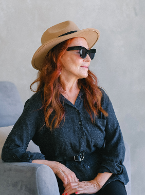

Как не утонуть в тревоге и управлять своими страхами

Содержание
- Как понять, что отношения с мамой были дисфункциональными и привели к травме?
-
Мама привет!
- Под под заголовок под заголовком
- Под под под заголовок под заголовком
- Под под под под заголовок под заголовком
- Ну вот опять заголовок который как «привет мама»
- Как понять, что вы страдаете от материнской травмы?
Заголовок h3
Один из самых важных навыков, которые может дать работа с психотерапевтом, — умение в разных ситуациях по-разному обходиться со своими эмоциями.
Снять этот процесс с автопилота и перевести его в поле сознания.
Давайте, к примеру, разберем тревогу. Можно разложить перед собой целую коллекцию доступных реакций и выбрать нужную.
Мы знаем, что нуждаться в помощи и поддержке в трудные периоды жизни абсолютно нормально для любого человека, и стремимся сделать психотерапию безопасной, удобной и доступной каждому.
Анна Крымская
Что еще можно делать с тревогой?
- Управлять ей через что-то внешнее: включать музыку, которая создает другое настроение, читать блоги, которые успокаивают и отвлекают.
- А еще порой можно разрешить себе тревогу заесть чем-то вкусным.

Чем шире доступный вам репертуар реакций и чем более осознанно вы можете выбирать из него то, что лучше всего подойдет в каждой конкретной ситуации, тем больше будет ваша устойчивость к стрессу, депрессии и неопределенности.
Мы знаем, что нуждаться в помощи и поддержке в трудные периоды жизни абсолютно нормально для любого человека, и стремимся сделать психотерапию безопасной, удобной и доступной каждому.

Одна из ключевых задач психотерапии как раз заключается в том, чтобы этот репертуар расширять и обучать человека пользоваться доступными ему реакциями.
Чем шире доступный вам репертуар реакций и чем более осознанно вы можете выбирать из него то, что лучше всего подойдет в каждой конкретной ситуации, тем больше будет ваша устойчивость.
А еще порой можно разрешить себе тревогу заесть чем-то вкусным.
Упражнение №1
Нужно последовательно напрягать и расслаблять каждую мышцу в теле на несколько секунд. Напрягать стоит довольно сильно, чтобы потом отчетливее ощущать расслабляющий эффект.

Чем шире доступный вам репертуар реакций и чем более осознанно вы можете выбирать из него то, что лучше всего подойдет в каждой конкретной ситуации, тем больше будет ваша устойчивость к стрессу, депрессии, неопределенности, да и к жизни в целом.
А еще порой можно разрешить себе тревогу заесть чем-то вкусным.
Что еще можно делать с тревогой?
Управлять ей через что-то внешнее: включать музыку, которая создает другое настроение, читать блоги, которые вас успокаивают и отвлекают.
Чем более осознанно вы можете выбирать реакцию, тем легче справляться с тревожными состояниями.
Упражнение №2
Нужно последовательно напрягать и расслаблять каждую мышцу в теле на несколько секунд. Начать можно с пальцев ног и постепенно подниматься вверх.

Чем шире доступный вам репертуар реакций и чем более осознанно вы можете выбирать из него то, что лучше всего подойдет в каждой конкретной ситуации, тем больше будет ваша устойчивость к стрессу.
Чем шире доступный вам репертуар реакций и чем более осознанно вы можете выбирать из него то, что лучше всего подойдет в каждой конкретной ситуации, тем больше будет ваша устойчивость к стрессу.
Одна из ключевых задач психотерапии как раз и заключается в том, чтобы этот репертуар расширять и обучать человека пользоваться доступными ему реакциями в той последовательности, пропорции и объеме, которые подходят именно ему. Без оглядки на то, «как правильно» или «как у других».
Упражнение №3
Нужно последовательно напрягать и расслаблять каждую мышцу в теле на несколько секунд. Смысл в том, чтобы через напряжение дать стрессу выход, а затем вновь привести себя в спокойное состояние через расслабление.